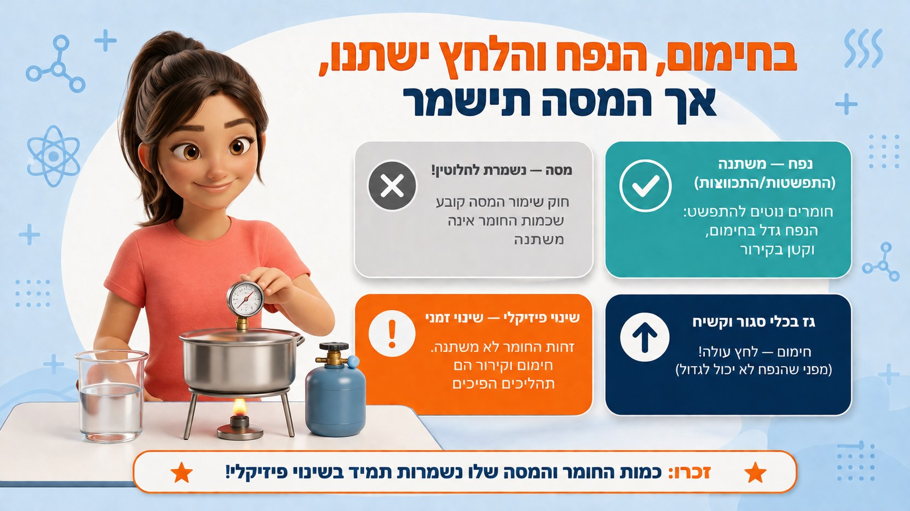

חומרי עזר לעבודה על הסקילים וב-Google Flow.
לחצו על כל כרטיס כדי לפתוח אותו.
בנוטבוק הועלתה תכנית הלימודים במדעים לכיתות ז' ו-ח' - אפשר להשתמש בצ'אט שלו כדי לשאול שאלות ולהיעזר בו בזמן הפיתוח.
שימו לב: זו לא הגנה אמיתית (מי שיפתח את קוד הדף יוכל לגשת לנתונים) - זה רק מונע הצגה אוטומטית על המסך. לחצו להצגה, ותצטרכו את קוד הגישה הפנימי.
⚠️ מהיום יש להוסיף בכל תחילת יחידה 2 משפטים שיכסו אותנו מבחינת משרד החינוך:
Cowork היא האפליקציה של קלוד לעבודה עם סקילים - כאן מתקינים ומפעילים את הסקילים שהצוות עובד איתם (learning-unit-creator, avatar-video-creator, ועוד).
.skill ידנית - לוחצים ➕ ← "העלאת כישור" ובוחרים את הקובץ (כמו avatar-video-creator). (2) התקנה מ-GitHub באמצעות skill-creator - כותבים לקלוד את פקודת ההתקנה עם הקישור ל-repo (כמו learning-unit-creator, מפורט למטה).תהליך העבודה - מבט על (5 שלבים)
learning-unit-creator ("תבני לי סוכן עבור פריט מס' X בלוח"). הסקיל מנהל ראיון של 8 שלבים, מציג שלד לאישור, ומפיק קובץ Excel מלא ב-Drive.טיפים שכדאי להכיר
איך מתקינים את הסקיל מ-GitHub
איך מעדכנים את הסקיל לגרסה חדשה
תשתמש ב-creator-skill כדי לעדכן את הסקיל מ-GitHub: https://github.com/maya-papo-ann/learning-unit-skill - קלוד יזהה שיש גרסה חדשה ויעדכן.שמירת קובץ האקסל בדרייב
Wizdi - סוכני למידה / [מקצוע] / [כיתה] / [מספר] - [שם הסוכן] / [שם הסוכן] - מערך.xlsx. אל תשנו את המבנה הזה.Omni Flash.+ ומעלים את תמונת הדמות. היא תופיע כתמונה ממוזערת לצד הפרומפט - זה המקום היחיד להוסיף אותה, ואותה תמונה בכל שוט.Voices, בוחרים את קול הדמות (טבלה בעמוד דמויות וקולות), אפשר להוסיף כיוון טון קצר ב-Customize Performance (optional), ואז Select voice.High quality 3D animation, consistent character appearance, cinematic lighting16:9, אורך 10s, ולהתחיל מ-x1 לבדיקה מהירה וזולה, ורק כשמרוצים - x4 לגרסה סופית.אפשרות 1: חילוץ הקריינות בלבד מקובץ האקסל
High quality 3D animation, consistent character appearance, cinematic lightingאפשרות 2: הסקיל של יוני - avatar-video-creator
סקיל מפורט יותר, שמלווה שלב-אחר-שלב (Shot by shot) יצירת סרטון אווטאר מדבר - מתמונת ייחוס אחת נעולה, בשפה שבוחרים, עם מעקב הפקה חי ב-HTML. מתאים כשרוצים שליטה מדויקת יותר בכל שוט ולא רק הדבקת קריינות.
התקנה כסקיל ב-Cowork
.skill - לא את קובץ ה-md.avatar-video-creator.skill.לא רוצים להתקין? פתחו שיחה חדשה והדביקו את כל התוכן של הקובץ AI_VIDEO_WORKFLOW_UNIVERSAL.md (מתוך אותו zip) - זה יעבוד מיד, אבל רק לשיחה הזו.
הפרומפט הקבוע לעיצוב הדמות באינפוגרפיקה
זהו פרומפט הבסיס לסגנון התלת-ממד שלנו באינפוגרפיקות. לפני השימוש, יש להוסיף בסופו את תיאור הדמות הרלוונטית מעמוד דמויות וקולות (השדה "תיאור" בכרטיס של כל דמות).
דוגמה
אינפוגרפיקה על שינויי מצב ולחץ, עם רותם - לפי הפרומפט למעלה + תיאור הדמות שלה.

פרומפט קבוע לעיצוב כרטיסיות מידע - סטייל שטוח (Flat) ונקי, בלי דמות, עם כותרת, איור וקטורי ופאנל הסבר. יש להוסיף/להחליף רק את הכותרת, האיור והטקסט בהתאם לתוכן הספציפי.